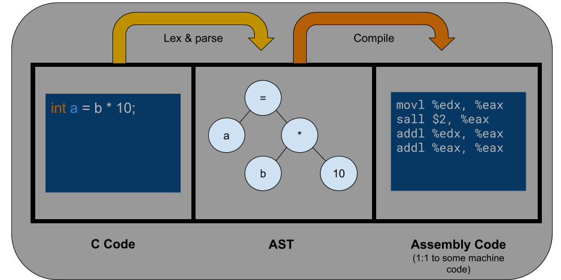
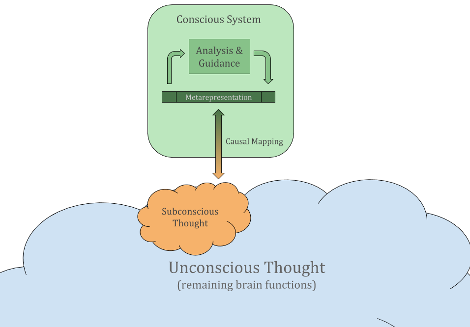
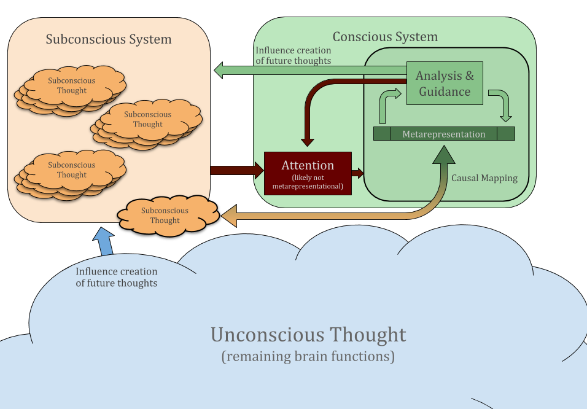
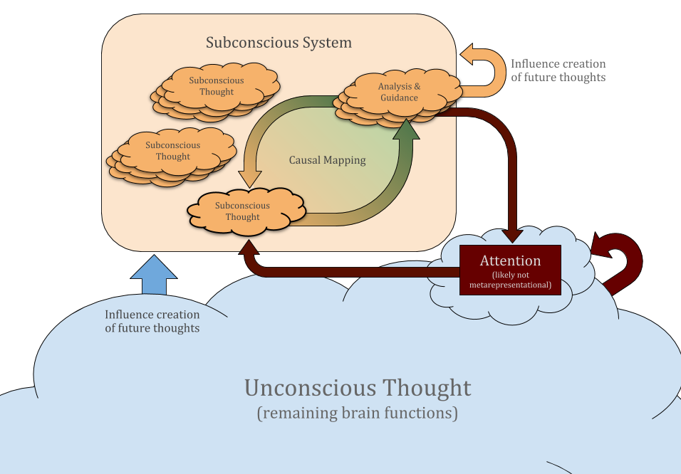

v1.0 - Published 14 Dec 2020
Seemingly ineffable―and yet a fundamental part of our existence―consciousness remains a mystery despite progress in neuroscience, cognitive science, and AI. The text below provides a unified lens with which to view consciousness. This lens is not necessarily complete, or an implementation of consciousness in human brains, but it is hoped that the lens will nonetheless be useful in reasoning about consciousness in biological and technological systems alike. Indeed, consciousness can itself be seen as a lens. Much like one might reason about a higher-dimensional space by looking at multiple lower-dimensional projections, such concepts as consciousness, intelligence, and self-modification serve as ways of viewing specific aspects of artificial and biological cognitive systems in an attempt to gain a holistic understanding.
Here we split what is commonly referred to as "consciousness" into two
distinct phenomena:
This section presents a series of approximations of the process we wish to define. Hopefully the progressive refinements will resolve initial qualms with the theory.
Thoughts, associations, reflexes, etc in biological brains are represented as patterns of neural activation, with the nervous system's architecture providing the "substrate" upon which these representations can exist. However, metacognition does not necessarily involve analysis of and interaction with direct representations of thought. For example, one may consciously perceive a thought as being in English, but the direct representation of that thought―encoded as a specific pattern of neural activation―is not necessarily a neural encoding of English. The refutation of linguistic determinism alone provides enough reason to suspect that thought doesn't use language as a base representation, or at least not exclusively.
Instead, we consider metacognition as interacting with metarepresentations of thought, natural language being an example in humans. In the context of metacognition, metarepresentations enable a system to reason about a thought without needing to understand exactly how it was originally represented or interpreted. Indeed, if metacognition involved base representations rather than metarepresentations, the field of neuroscience would be based far more on introspection than it actually is. We will have much more to say on metarepresentation in the sections below, and why introspection of one's own conscious experience is insufficient to make general claims on the types of metarepresentation employed by all humans.
Before going further, let's talk about metarepresentation in computers to make the concept more concrete. Fundamentally, everything happening in a processor boils down to patterns of bits and modifications to patterns of bits. Some representations in the form of patterns of bits are two's complement signed integers, IEEE 754 floating point numbers, and machine code. In the words of the brilliant textbook SICP, programming languages are structured around primitives, means of combination, and means of abstraction, for both data and code. However, simply combining and abstracting primitive representations does not necessarily create a metarepresentation (particularly one with causality, which we will discuss below); a metarepresentation must represent a representation.
In the case of C code compiled into an executable, an example of a metarepresentation is the abstract syntax tree of the C code. The AST is a metarepresentation because it is a representation of the machine code contained in the executable, which is the base representation. Being a metarepresentation doesn't mean that the nature of representation is necessarily different than that of the base representation; the AST is still simply a pattern of bits―just as metarepresentations in the brain are still simply patterns of neural activation―but the level of representation is clearly different. Generally, a base representation in a processor is specially handled by a particular subsystem, like an arithmetic logic unit or floating point unit. Metarepresentations, on the other hand, are handled by systems built on top of the processor. The C compiler, which corresponds to a collection of machine code, is what handles the AST.
Figure 1: C code and AST as metarepresentations of procedures.
Now, since we've established that an AST is a form of metarepresentation, let us note that an AST corresponds to the high-level code itself. The process of lexing and parsing converts high-level code in the form of text into an AST. In this sense, the high-level code is a representation of the AST and thus we conclude that while machine code is a base representation of a procedure, high-level code is (transitively) a metarepresentation of a procedure; it just happens that ASTs are a much more convenient metarepresentation for compilers and interpreters to use. As an aside, the homoiconic nature of Lisp is exploited by the language design so that Lisp code is a direct textual representation of its AST. This essentially removes the parsing step from the conversion between code and AST, and is a great convenience in the context of metaprogramming and self-modifying systems, but we will save further discussion for a future article on self-modification.
As a final note, we ask the question: since a metarepresentation of something is inherently a direct representation of that thing, when do we consider something a base representation vs a metarepresentation? While a high-level programming language could be seen as a metarepresentation of procedures, someone learning the language for the first time will learn about it specifically as a direct representation of procedures. Ultimately, nothing is a metarepresentation in general; rather, it can only be a metarepresentation with respect to a particular base representation (e.g. in a processor, brain, etc). Most modern programming consists of considering a high-level language as a direct representation of procedures, but someone optimizing a hot spot for a particular processor may indeed think about the high-level code as a metarepresentation with respect to the processor, trying to tease the compiler into generating the desired machine code.
Finally, we consider the notion of
Our first approximations of consciousness-as-control are
characterized by the
Within the context of the conscious system, we can provide a clear distinction between the concepts of conscious, subconscious, and unconscious thought. Unconscious thought is that for which the conscious system simply lacks a causal metarepresentation, like the patellar reflex, functions of the autonomic nervous system, and even functions of relatively higher brain structures like the limbic system. Subconscious thought is that which can have a causal metarepresentation, but which either doesn't currently have a constructed causal mapping between base representation and metarepresentation, or whose causal mapping is not currently used by the conscious system. Finally, conscious thought is subconscious thought which the conscious system is currently analyzing and guiding using a causal metarepresentation.
Figure 2: First approximation of the conscious process.
Now, we note that the nervous system is inherently parallel, with many distinct (although not necessarily disjoint or isolated) patterns of activation occurring at the same time. While pondering the nature of consciousness, our central and autonomic nervous systems control such various behaviors as vasoconstriction, respiration, and heart control, various sensory input is relayed by the thalamus to corresponding regions of cerebral cortex, and a myriad of other singular and repetitive activation patterns occur, despite the empirical and introspective evidence pointing to the fact that conscious focus in nonanomolous brains is exclusive (i.e. that we can't multi-task).
Given the multitude of subconscious thoughts that could be made
conscious and the assumption that conscious focus is exclusive, it
is interesting to consider conscious attention and its influencing
factors. Here we define
Figure 3: Second approximation of the conscious process; added attention.
More broadly, we can consider in general how conscious and nonconscious thoughts can influence each other. While trying to prove a mathematical theorem, one might consciously note that certain classes of approaches will not work and may consciously enumerate desirable properties of better approaches, but the jump to a new approach is not necessarily conscious. In general, it seems like such phenomena as "eureka moments" and logical leaps are characterized in part by a conscious discontinuity, where the previous conscious thought influenced subconscious thought until a more promising line of thought took its place. On the other hand, nonconscious sensory and emotional processing can certainly influence subconscious thoughts, in addition to modulating conscious attention. Perhaps unsurprisingly, this suggests a heterarchical relationship between the conscious system and nonconscious systems.
Figure 4: Third approximation of the conscious process; added subconscious system.
In this section we will examine the nature of human metarepresentations. At any point in time, our conscious experience can be characterized by the modality of conscious focus. Russell Hurlburt has called the focus of consciousness the "Pristine Inner Experience", and distinguishes between five frequently occurring kinds[2]:
We use Hurlburt's categorization, not as an advocation of a necessary truth, but simply to apply our lens to it and see what insights we can draw. Hurlburt's research found that each of the 5 modalities of consciousness above served as the dominant aspect of conscious focus in roughly 20% of test subjects (even if the percentages may vary in different samples, the variation seen even in a single sample is interesting). Furthermore, some people simply do not experience one or more of the above modalities of consciousness, at least with any significant frequency; to my surprise, some hearing people do not regularly experience inner speech. For this reason, introspection, while capable of disproving overly restrictive statements on the nature of human metarepresentations, is insufficient to make or prove such statements. This variation in modality of conscious focus between people is perhaps another reason why consciousness is so murky a concept.
While some may not regularly experience inner speech, attempting to read a long word―particularly in alphabetic or syllabic writing systems, where symbols correspond to sounds―will likely lead to subvocalization. Try reading "hippopotomonstrosesquipedaliophobia".
A key characteristic of representations based on sound is their temporality. When listening to another person speak, the ordering of information is imposed by the speaker, with the nature of sound demanding an ordering of some sort. It's notable that temporality seems to be a key element of language―irrespective of the demands of sound as a modality―although the degree to which temporality plays a role in the structure of sentences (i.e. the syntax of a language) can vary. For example, Latin employs declensions to explicitly encode such information as grammatical case, whereas English implicitly encodes this information through word ordering. Because of this, Latin word ordering enjoys a relative freedom, serving more to indicate connotation than denotation. However, this freedom is at the level of sentences; if this article were written in Latin, the sentences and paragraphs would still need to ordered appropriately to be comprehendible (relatively speaking).
The visual modality differs from auditory in that ordering is not necessarily imposed by the representation. Looking at Figure 4 above, there is not a fixed ordering in which the viewer must analyze the content which the diagram represents (although fields like advertising and graphic design may exploit heuristics to statistically influence how humans perceive visual representations). Indeed, while computer vision models generally analyze entire images as an atomic unit, "image processing" in humans is centered around fixations and saccades, where the small visual region corresponding to the fovea is most deeply analyzed.
That the visual modality does not require ordering is not sufficient to claim that visual metarepresentations necessarily exploit this freedom from temporality. While many readers may experience visual thought in one form or another, tickertaping refers specifically to seeing the orthographic appearance of words one thinks[3]. This is a stark example of the distinction between modality and language of metarepresentation, where a single language may have representations in multiple modalities. Taking this further, someone who thinks to themselves but sees a series of non-orthographic images is not necessarily thinking in a manner completely detached from natural language.
As an aside, it would be interesting to see if the prevalence of tickertaping varies amongst, say, native Italian and Mandarin speakers. While written Chinese is not entirely semantic, the majority of characters being phonosemantic, it certainly contains more semantic information than written Italian (a shallow orthography). To date, I've been unable to find information on this.
Both inner speech and inner sight correspond to sensory modalities, but the origin of the content is the mind itself; inner speech and inner sight are metarepresentations of thought. Sensory awareness, as we define it here, is distinguished by being a direct representation of sensory information (of any sensory modality). The content comes from outside. Communication is an exception, where I would argue that consciously focusing on the content of the communication does not qualify as sensory awareness (as opposed to, say, focusing on the sound of a person's voice as they speak), but we will defer communication for now.
In this sense, the degree to which one's conscious focus resides in sensory awareness seems to be partially a matter of conscious attention. One could consciously savor every bite of a meal, or scarf it down in seconds while thinking about something else. Importantly, sensory awareness encompasses not just the awareness of particular sensory information, but also how the sensory information "feels". We must defer further discussion of this to the section on consciousness-as-experience below.
The defining trait of "unsymbolized", or structural, thought is that its metarepresentation doesn't correspond to a sensory modality; as before, we note that language and modality are not necessarily coupled. Lingering on the notion of language, it's worth highlighting the fact that language as a tool for communication relies on shared context (what we often refer to as "culture" or "common sense"). If one traveled back 1000 years in time and wanted to complain about their commute, so much about the modern world would need to be explained before something as simple as "my commute sucks" would be even remotely comprehendible, taking for granted that we can even assume a shared language.
The notion of context is still relevant for language as a tool for metarepresentation rather than for communication with others. Experiencing inner speech does not imply that communicating one's thoughts to another would be trivial; there may be context in the mind beyond common sense and culture that would need to be shared before the original thought could be communicated. One of the beauties of natural language is that it enables us as humans not just to communicate immediate thoughts, but also to make explicit the context within which those thoughts are embedded. Importantly, while language is inherently temporal and serial, the contexts it can represent encompass a much broader set of structures, whether this be a description in English of a system with interrelated parts, or an implementation of circular linked lists in C (compare anaphora and cataphora in natural language to references in programming languages). Thus we could assume that at least some of the context of a thought is represented as structural thought despite the fact that the individual may experience something like inner speech. While often experiencing structural thought alongside other modalities, I personally find that trying to understand what another is saying precludes inner speech, and thus makes it more likely that my conscious focus will be primarily structural.
In the context of AI, it seems important to note the distinction between "unsymbolized" and "unsymbolizable". As an example, Lisp is a textual representation of binary trees with leaves populated by data; cons cells can also construct circular structures that cannot generally be represented as Lisp text, but dialects like Common Lisp provide means of textually representing certain circular structures. Another example are ontology languages like OWL, which are textual representations of potentially very complex knowledge graphs. Ultimately, ontology languages can be thought of as a means of serializing the in-memory ontology in a human-{read,writ}able form. In both of these examples, the in-memory representation is only partially symbolized, but can be textually represented completely symbolically; partly for this reason, I prefer to refer to this modality as "structural" rather than "unsymbolized". Even artificial neural networks (ANNs or just NNs) are symbolizable; consider some TensorFlow 1 code symbolically representing a computational graph corresponding to the forward pass of the NN, along with parameters populated from training. It remains an open question as to whether NNs can be meaningfully symbolized―what could be referred to as making the model "interpretable", allowing developers to interpret the semantics of the resulting system―in general. It is my opinion that finding a general method of meaningfully symbolizing NNs is not necessary to usefully employ them or any other probably approximately correct model without resorting to end-to-end neural systems, which spread the characteristic semantic opacity and inability to explicitly correct behavior to the entire system.
For fun, we consider the case of "inner speech" for those with pre-lingual deafness. Certainly inner sight remains a modality of metarepresentation, but some people seem to think in sign language in a manner that is more proprioceptive than visual. Lacking fluency in sign language, an example I have personal experience with is the common phenomenon amongst rock climbers of "visualizing" oneself climbing a particular route, allowing the climber to strategize an appropriate route without wearing out the body. In my case, the modality is distinctly proprioceptive rather than visual. In either of these cases, the experience seems to lie outside of Hurlburt's 5 categories, not qualifying as sensory awareness due to the nature of the content.
Discussing different modalities naturally leads to the question: what are these modalities and why is there such individual variance? It is notable that subvocalization during reading has been associated with aiding in reading comprehension; two classes of hypotheses are that the phonological pathways in the brain facilitate the accessing of word meanings, or the retaining of those word meanings in short-term memory for semantic integration[4]. Viewed through this lens, we might see different modalities of metarepresentation as the product of the conscious system leveraging different subconscious brain regions to aid in metacognition; inner speech could serve the same purpose as subvocalization, but here the pathway is used for the content of a subconscious thought rather than the content of text on a page. Indeed, we have been considering the conscious system to be a distinct system, but much of it can simply be a part of the subconscious system that is specialized for metacognition. Leveraging other subconscious regions to partake in metarepresentational mappings, the "conscious system" can extend itself into subconscious regions not specialized for metacognition. The exact means by which this would occur seems to rely on the state of the subconscious system in a way that leaves much room for nature and nurture to create individual variance (e.g. genetic predispositions, development during critical periods, personal preference for favoring certain means of thought or actions influencing development of brain regions, etc). The remainder of the "conscious system" here would be an unconscious system driving conscious attention. Thus the conscious system in this model is the result of an unconscious system leveraging the subconscious system to leverage itself in order to analyze one of its own thoughts.
Figure 5: Fourth approximation of the conscious process; maximally leveraging existing subconscious machinery.
As discussed in SICP,
Indeed, since metalinguistic abstraction involves changing the language, it generally requires changing the system which evaluates the language (here, compiler or interpreter). In traditional programming language systems, there are limitations with respect to how interpreters for multiple languages can coexist and interact with the base interpreter. 3-LISP is an example of a language system in which code can be provided either as code being interpreted or as code doing the interpretation (recursively, in what can be viewed as an infinite tower of reflective interpreters)[5]. We'll save this discussion for a future article on interpreters, but needless to say, 3-LISP enables metalinguistic abstraction in a manner that is much more robust and dynamic than traditional languages allow.
In the context of the brain, we can look at something like cortical specialization through the lens of metalinguistic abstraction. Different regions of the cortex (e.g. visual cortex vs auditory cortex) may "specialize" not just by containing different models, but also by representing those models in languages most appropriate to the domain. Since metalinguistic abstraction involves creating a language by leveraging an appropriate set of abstractions, this could be achieved simply by building models on top of other models, assuming the abstractions provided by the base models yield sufficient expressivity; while Turing completeness is not necessarily relevant here, it's worth noting that the logic gate language discussed above retains the Turing completeness of Scheme, since a Turing complete processor can be represented as a circuit made of wires and logic gates. We might look at modalities of human metarepresentation as arising from the different "languages" used by these cortical regions.
Metalinguistic abstraction is also relevant in the context of deep learning. One of the key differences between "plain" machine learning with NNs and deep learning is the focus on representation learning; that is, by having a "deep" model containing many layers of neurons, shallow layers can serve to provide a more appropriate set of representations for deeper layers to use. Indeed, many deep learning architectures have multiple deeper subsystems leveraging the same shallower representations. A common example of this are embedding layers (e.g. to produce word embeddings in natural language processing systems). While I have serious qualms with the kinds of representations end-to-end neural systems use―particularly in the context of artificial general intelligence―the ability of deep learning models to perform metalinguistic abstraction is undoubtedly powerful for building certain specialized subsystems or narrow AI systems. On the note of metalinguistic abstraction requiring changes to the interpreter, we point out that the base interpreter here is fixed (for example, the fixed subsystems of Tensorflow which allow for SavedModels to be executed). Since each layer of an NN corresponds to a nonlinear mapping (a feedforward neural network corresponding to a composition of nonlinear mappings), we can look at the mapping as being both interpretation and modification of the input representation. This mixing of roles (among a number of other factors) makes it very difficult in general to take a single layer or chain of layers in isolation and compare it to something we as humans would consider an abstraction. Nevertheless, successful training of a neural network should result in a probably approximately correct mapping (to some degree) between input and desired output, particularly within the context of i.i.d. assumption.
When different parts of a system express information using different languages, metarepresentations can also serve as a way of bridging information between regions ("regions" being an intentionally fuzzy concept here). Natural language in this scenario might serve as a common metarepresentation simply because of its expressiveness and the existence of specialized cortical regions for language processing.
For fun, we wrap up this section by comparing the temporality of natural language to the call stack in computing. Ignoring more complex forms of control flow for simplicity, we can view program execution as consisting of a top-level function which can optionally call itself or any number of other functions, which themselves can also optionally call any number of functions (compare to the structured program theorem). In order to keep track of where to return after one function completes, function invocations involve pushing a new frame onto the call stack, which contains the return location in addition to other information like the values of function arguments and local variables. The structure and information of the call stack can be used by tools like debuggers so that programmers can examine and modify runtime behavior. While debug builds provide additional debug information and shirk aggressive optimization to make the debugging experience more palatable, the structure of the call stack is inherent to how programs execute rather than existing specifically for debugging. Many systems will produce a stack trace when a fatal error occurs, so that developers can see what chain of function invocations preceded the error. Similarly, one could think of ways to structure thought temporally so that the base representation inherently corresponds to the structure of language, facilitating the mapping between the base representation of thought and language as a metarepresentation of the thought.
We begin this section by defining
the
In considering different metarepresentations of thought,
understanding seems to be a metarepresentation particularly
well-suited to the process of guiding thought. In essence, guiding
a thought consists of choosing a particular "path of thought"
provided by its understanding, and causality of the
metarepresentation consists of actually leading the thought down
that path; in this sense, understanding implicitly rather than
explicitly represents the original thought. What we call
the
From our conscious perspective, this might be perceived as the simultaneous creation and analysis/control of conscious thought (i.e. simultaneous cognition and metacognition). Even in an inherently parallel system like the brain, these two steps can't actually happen simultaneously, if for nothing else but inherent communication delays. Without necessarily making a claim on the meaning of macroscopic brain waves, we note that the range of frequencies―from the slow delta waves (~1-4Hz) to the rapid gamma waves (~30-70Hz)―leave plenty of room for non-simultaneous processes to occur within a single oscillatory period. Considering a computer simulation of a physical process running on a single-core processor, while the objects (atoms, molecules, macroscopic objects, etc) have simultaneous interactions on the scale of a single simulation timestep, the interactions are not simultaneous on the scale of a single instruction cycle, ignoring limited exceptions like SIMD instructions. Thus "simultaneous" processes can still be implemented serially, but the speed of the simulation timesteps may be affected. Somewhat tangentially, the highly parallel nature of the brain imposes serious constraints on the ability to perform real-time simulations of brain-like systems. Artificial NN architectures seek to minimize or completely avoid cyclic connections for the performance of training and runtime ―with RNN architectures constraining recurrence to a small part of the total system (consider how RNNs are represented as single layers in Keras)―while the brain has a truly astounding amount of cyclic connections at many levels, which exploits the brain's parallelism. This doesn't necessarily mean that computer architectures must radically change in order to achieve AGI. After all, computer science is fundamentally about deeply understanding problems and how they relate to the nature of computers, rather than trying to blindly copy the natural world. In the space of computing, nature is an inspiration, not an instruction manual.
One consequence of the metacognitive loop as described above is that metacognition (e.g. the decision to take a particular mental path over another) occurs subconsciously, rather than consciously. How does this fit with the fact that we can perform conscious metacognition? As an example, by consciously thinking about metacognition in one's own mind (i.e. performing conscious meta-metacognition) one could create a list of common metacognitive strategies, like:
Indeed, fields of study like epistemology and philosophy of mind serve as testaments to the human ability of conscious metacognition. The premise here is that conscious metacognition can occur, but is based on "historical data" rather than the conscious focus being on metacognition as it occurs in real-time; that is, only by pausing conscious base cognition can we have conscious metacognition. For example, one might recognize a common metacognitive strategy (e.g. the reductionist approach of breaking problems into subproblems) by solving a problem and then thinking back to see what strategy was employed. The ability of conscious thought to traverse different levels of metacognition is a matter of attention and understanding. Feelings like laziness or frustration can serve as an attentional impetus to move from base cognition to metacognition, while metacognitive strategies can also be a part of understanding and conscious modulation of attention, allowing experience to shape the traversal of metacognitive levels in a manner more efficient than resorting to something like frustration. Early physics students may have it drilled into them to begin solving problems by looking for the most relevant information, after which the strategy need not be the content of conscious focus. Essentially, when understanding is capable of representing metacognitive thoughts as opposed to only base cognitive thoughts, the metacognitive loop can be applied at higher levels of cognition.
In a sense, this imposes some limitation to the degree of conscious control we can impose on our conscious thoughts at any one point in time; conscious metacognition allows us to "pick up" a thought and place it somewhere else, but switching back to base cognition relinquishes conscious metacognitive control. However, the ability to consciously train metacognitive strategies makes this limitation seem far less significant when looking at longer timescales, even on the scale of days or weeks, let alone on the scale of a lifetime. One of the characteristics of flow is focus on a task that is not only uninterrupted by unrelated thoughts, but also uninterrupted by switches from conscious base to meta cognition; the experience "flows" because we don't interrupt thoughts by picking them up and moving them elsewhere.
As a final speculative note, the subconscious system in the brain could be demarcated, from a 10,000 foot view, by the neocortex, with parts of the prefrontal cortex serving as specialized metacognitive regions. Within this model, one might look at certain neural oscillations between the prefrontal cortex and other cortical regions as being representative of the ongoing metacognitive loop which is so central to consciousness-as-control. Even from this highly simplified view, the concept of "finding where consciousness lies in the brain" seems a bit silly. The section below on consciousness-as-experience will even further muddy the waters.
In conclusion: Consciousness-as-control refers to the process by which a conscious system analyzes and guides a thought of the subconscious system. We theorize that this process in the brain consists of an unconscious system leveraging the subconscious system to analyze and guide one of its own thoughts using a metacognitive loop.
In philosophy, qualia refers to subjective conscious sensations, like the fact that pain or warmth "feel like something". Chalmers' hard problem of consciousness―which essentially states that mechanisms cannot be provided to explain qualia―is based on the premises that qualia exist and are irreducible. This section describes a theory that agrees with these premises―to at least some degree―while arriving at a very different conclusion, refuting the existence of a "hard problem" of consciousness which cannot be described by mechanism. This theory can be taken separately from the formulation of consciousness-as-control, but is built on top of it.
We begin with the observation that the unconscious system contains a robust model of the body, even if this model is not entirely explicit or centralized. The fact alone that the CNS is capable of integrating sensory information from the PNS and providing top-down control is a testament to this mental model of the body. Whether it be the thought of food triggering salivation, fear triggering a fight-or-flight response, or visual exposure to light at night triggering a frequency-dependent inhibition of melatonin production, the ability of the CNS in interpreting and controlling the state of the body through this model is an integral part of our existence. It is also clear that this model is primarily unconscious rather than subconscious. If we have subconscious mental models of such body parts as salivary glands or the smooth muscles that enable vasoconstriction, it is only because progress in anatomy has made this information available (and still we must consciously endeavor to understand this information before it is available as subconscious mental models); the unconscious models, however, are built-in, even if they may change over the course of a lifetime. The somatotopic map in the primary somatosensory cortex is an example of a built-in subconscious model of a part of the body (specifically the body surface, with a few exceptions), which we will further discuss below.
There is also some unconscious model of the global "mind" or "self" that encompasses much of what we call "emotion". Unlike sensory awareness, emotion is not localized to a particular part of the body. The historical cardiocentric hypothesis shows how our model of "mind" is not localized; if it were, humans would not need to consciously hypothesize on its anatomical location of reference, oftentimes reaching different conclusions. Compare to the example that burning one's hand won't result in a conscious deliberation of whether the hand or abdomen was the site of pain (ignoring things like remapping of somatotopic arrangements, as might happen after losing a limb, and referred pain). That unconscious emotions can affect subconscious thought should be apparent to all human readers (sorry language models, you wouldn't get it). While there doesn't seem to be a direct means of conscious thought controlling the unconscious model of the mind, conscious endeavors like cognitive behavioral therapy and meditation show how conscious thought can indirectly influence this model.
Reiterating our existing mechanistic formulation of consciousness, we have a small part of the unconscious system creating consciousness-as-control by maximally leveraging the subconscious system. The unconscious system here retains some control over the metacognitive loop through attention, and by the fact that it can influence subconscious thoughts. Being inherently parallel, the brain can of course have more than one metacognitive loop occurring at once, although the final section below gives some reason to suspect that the number of effectively integrated, simultaneous metacognitive loops for a particular physical architecture would be relatively limited.
Here we theorize that two distinct, simultaneous metacognitive
loops occur in the brain. Recalling our definition of
understanding as a contextual model of ways to use information,
it is notable that understanding need not be as general as we
often think of it. The metacognitive loop we've described above
will be referred to as the
The second metacognitive loop will be referred to as
the
Recall that the unconscious system heavily leverages the subconscious system in the case of logical consciousness. We theorize that somatic consciousness still leverages the subconscious system for sensory processing, but that the core metacognitive loop for somatic consciousness is retained within the unconscious system. Going back to our 10,000 foot view of the subconscious system being demarcated by the neocortex, we would expect to see lots of projection fibers between the cortex―particularly regions which process information relevant to modeling the body's internal state and its immediate surroundings―and the lower brain structures which it surrounds. Indeed, thalamocortical radiations seem to largely satisfy this requirement (of course, non-exclusively; consider pathways from the neocortex through e.g. the striatum), and also include projections to the prefrontal cortex.
Interestingly, by the somatic consciousness leveraging the subconscious system for sensory processing, the subconscious system is also capable of forming its own integrated model of the body and surrounding world by having the different cortical regions communicate with each other. The result is two distinct but deeply intertwined models forming alongside one another and influencing the other. One could view this as a split between unconscious and subconscious components of somatic consciousness, although we will defer discussion as to whether these constitute distinct consciousnesses to the final section. In this sense, metarepresentations kill two birds with one stone. Metarepresentations allow the unconscious system to leverage subconscious processing for the somatic consciousness, while also serving as a means of bidirectional communication between the somatic and logical consciousnesses. Thalamo-cortical resonance does indeed seem to play a key role in both perception and consciousness.
We could look at the metacognitive strategies employed by the metacognitive loop of somatic consciousness as being driven by emotion rather than more general metacognition. Emotion here serves as a mediator between the two otherwise-conflicting factors of needing a wide range of behavior to account for the variability of the potential environment, while desiring consistent rather than erratic behavior at any point in time. Thus emotion provides a partial means of controlling a metacognitive loop without requiring the metacognitive machinery and generality of logical consciousness.
Figure 6: Approximation of the relationship between somatic and logical consciousnesses.
Another interesting consequence of having a subconscious component of somatic consciousness is that some somatic thoughts become available as subconscious thoughts to the logical consciousness; sensory awareness consists of logical conscious focus being applied to somatic thoughts. While there is clearly some ability of logical consciousness in directly modifying the model built up by the somatic consciousness―control of voluntary muscles quickly coming to mind―this direct control is seemingly limited. It is one thing to visualize a ball falling down, and another to see it in reality. The memory of warmth in the middle of winter is not nearly as comforting as the actual sensation. To a very real degree, the unconscious components of both somatic and logical consciousness serve as a means of upholding the biological imperatives of survival, reproduction, and energy conservation. If the memory of warmth seemed like the real thing while stranded in the arctic tundra, or if the threat of a black bear could be visualized away into a teddy bear, survival of the individual and ultimately the species would begin to look dubious (although pretending a black bear is a teddy bear is still better than trying to run away from it). Similarly, limiting logical access to the somatic model of the body confers survival benefits. Giving children the ability to modify the workings of their organs through logical introspection seems like a good way of preventing survival into reproductive age, exerting an evolutionary pressure to not have this ability if it were present. Note that this doesn't necessarily place an absolute limit on the ability to use logical consciousness in modifying parts of the somatic model, but simply that we can't do so directly (more on this below). What we call "listening to one's body", here would be seen as focusing logical attention on part of the somatic consciousness through the subconscious somatic.
In the previous section, we mentioned that sensory awareness is not a metarepresentation of thought. However, since nothing is a metarepresentation in general, we must clarify. Sensory awareness is not a metarepresentation with respect to the subconscious system, but may be with respect to the unconscious system. Taking the somatotopic map as an example, this subconscious mapping of the body surface is a direct representation within the subconscious system, but could be a metarepresentation with respect to the unconscious model of the body. In that case it could serve as an interface between the two systems, allowing communication despite the fact that the unconscious system has a much deeper built-in model of the body than the subconscious system. Of course, this goes both ways; the subconscious system can also have much deeper models than the unconscious system, as might be seen between the visual cortex and lateral geniculate nucleus.
At this point, we return to the question of what qualia are and whether they can be described by mechanism. The most staunch substance dualist, for example, could accept the mechanism of somatic-logical dual consciousness (I tend to avoid the term "dualism" here because that is often used in this context to refer specifically to mind-body dualism) while rejecting the idea that it could explain qualia. Returning to the discussion of "unsymbolized" vs "unsymbolizable", a substance dualist would consider qualia to be unsymbolizable (meaningfully or not), and therefore a simulation of neural activations in the brain would not be capable of reproducing the subjective experience that occurred alongside the pattern of neural activation. An interactionist might argue that somatic consciousness could serve as a physical mechanism of interacting with a non-physical substance which serves as the true source of qualia, perhaps as a radio picks up electromagnetic signals, although here the substance of the signals would likely be beyond the realm of physics. Certainly, if one finds it inconceivable that a hypothetical, fully-accurate digital simulation of a human nervous system―necessarily requiring simulation of bodily systems and the universe around the body―would not be able to experience qualia, this discussion will not be convincing. However, the purpose of this discussion is not to convince; it simply would be a shame to terminate this section without analyzing qualia after having described somatic consciousness.
We view subjective experience from two perspectives that are not as mutually exclusive as they might seem, but first, let's consider an analogy. In a video game that is not procedurally generated, developers manually create and arrange the content of the game world, with a game engine allowing developers and players alike to experience and interact with the game world through a computer. Taking a representationalist stance, we could consider the brain as forming a sort of video game, but here the game world is formed from sensory input (among other things) rather than being prefabricated. Much like a video game running with no one playing, simply creating and updating this representation of the world doesn't mean much. What we refer to as consciousness-as-control is the means by which the mind "plays the video game"; we've above described two different conscious processes, which interact with somewhat different content and in somewhat different ways, although we claim they are both based around the idea of metacognitive loops. Consciousness-as-experience refers to the fact that consciousness-as-control―that playing the game of life-as-experienced-by-you―can produce subjective experience.
Continuing with the video game analogy, one could look at being immersed in an actual video game as collapsing these two layers of video games; being immersed in a first-person game means playing as the game character, rather than playing as yourself playing as the game character. Poor graphics don't necessarily stand in the way because consciousness interacts with the brain's model of reality, not reality itself, and therefore the "game engine" inside the brain can fill in any gaps. Taking this further, immersion in a novel is another example of creating a different reality, but the means of creating this reality is based on the interpretation of text rather than more general sensory input. In dreams, not even text is required to form a representation of reality; the mind can form a representation of reality using nothing but itself (something something politics). We might think of empathy as the degree to which one can approximately construct the reality of another, with absolute close-mindedness or indifference to any reality other than one's own as the lower bound. Perhaps one reason why mystical experiences can be so impactful is that they force the person to confront their built-in narrow-mindedness to the space of conscious experience. While I believe each of us has a unique conscious experience that cannot be exactly replicated in another's mind―a belief which the above discussion seems to leave room for―I think one needs to be careful when considering the degree of uniqueness. A Bengal cat living amongst Siamese cats might find itself to be exceptionally unique, but only because it fails to realize that being a cat was not a foregone conclusion.
With a hopefully clearer view of where consciousness-as-experience fits into the broader picture of the mind, we now consider how this might arise from consciousness-as-control.
This perspective claims that conscious experience arises from a conscious process applying attention to a representation of itself, in addition to the already-discussed focuses of attention like representations of the body and the world around the body. Starting with the somatic consciousness, we might look at emotion not only as a means of directing the somatic metacognitive loop, but also as a partial representation of the somatic consciousness's current state itself. In a sense, while we think of our body as part of ourselves, from the perspective of a conscious process, just dealing with a model of a body need not confer a sense of self. Modeling the conscious process itself produces a self-referentiality that might enable the development of a deeper sense of identity. Having machinery for a conscious process to partly focus attention on itself also suggests a built-in bias for having a sense of self, for which there would likely be a strong evolutionary pressure.
The attention schema theory proposes that conscious experience arises from the brain constructing a model of attention. Indeed, attention is a part of a conscious process. It's interesting to consider means of superimposing a model of attention on top of existing, non-self-referential models; take, as an example, a sort of vector field of attention superimposed on a model of the body surface. We might view the logical consciousness as having a subconscious model of attention that is partly controlled unconsciously (perhaps this model serves as a causal metarepresentation of logical attention, allowing for unconscious control from afar). However, modeling attention alone does not seem sufficient as a representation of a conscious process. I would extend the theory by positing that conscious processes here model understanding as well as attention, emotion being a form of understanding used by the somatic consciousness.
Turning to the logical consciousness, having a model of understanding is certainly important for general metacognition. In an environment where there is always more knowledge to gain and experience to be had, having a rough idea of how deeply one understands a situation or concept allows for educated guesses about whether one needs to gather more information or is ready to act beyond information-gathering. Modeling subconscious understanding, however, seems to go further than that. Taking sound as an example, "understanding" the sound of a saxophone could certainly involve relating to one's body of knowledge about wind instruments, but it seems likely that the majority of information the understanding would relate to is of the auditory modality (i.e. represented in a language based on models appropriate to the modality). Similarly, seeing a deep red cherry, one's understanding of the visual stimulus could relate it to natural language labels for―or a body of descriptive knowledge about―the fruit or its color, but relating to other visual stimuli (e.g. relating the color to the deep red of blood, pomegranates, or one's favorite shirt) is a much richer avenue for relating the information of the stimulus to other information. Thus understanding of sensory information would certainly relate to logical information, but would likely relate much more deeply to other sensory information, and vice-versa.
Returning to the brief discussion on call stacks being a source of information about a program's current state that is inherent to how the program runs, we might also wonder if subconscious understanding can be modeled based on how it inherently works. Without claiming to be a complete explanation, we turn to the concept of spreading activations. In the context of useful association, understanding might be seen as a means of modifying how and where activations spread, which could be useful for controlling metacognitive loops, influencing future thought, etc. In having activations spread, making some paths lead to a central location or set of locations ("central" might be specific to just a particular region, with other central locations for other regions) could be used to provide information about the nature of the activation spreading characterized by that understanding. Something like a self-organizing map could enable the resulting (in the limit) space-filling curve to support built-in regions―i.e. built-in models of understanding―while also enabling the creation and refinement of new regions, partially with respect to existing regions. Importantly, this representation of understanding would likely not be causal.
Briefly, we note that one might consider this as an illusionist perspective, in that a conscious process creates an illusion of subjective experience. However, I prefer to see it as representationalist; within the somatic consciousness, anger is not an illusion, but a representation of a real state of control. We defer interaction between consciousnesses to the next perspective.
We have already briefly discussed the concept of different regions of the subconscious somatic communicating with each other to reach distributed consensus. However, there is no reason why the subconscious logical would be isolated from the subconscious somatic. From an emergentist perspective, we might see the distributed consensus amongst both somatic and logical subconscious thoughts as producing a form of conscious experience beyond just the sum of somatic and logical consciousness. Each conscious process receives, beyond the "normal" input, information from the other conscious process. For example, emotion as a partial representation of the somatic consciousness might be used for self-reference within the somatic consciousness, but could also be used as input for the logical consciousness. In some sense, "self" is the result of these two consciousnesses reaching a consensus on what might otherwise be mutually exclusive models of self. Indeed, while the distinction between somatic and logical consciousnesses may be a useful lens, it's very unlikely one could take activity in the neocortex and label it as subconscious somatic or subconscious logical.
The concept of distributed consensus between both logical and somatic subconscious thoughts also provides some insight into the ability of logical consciousness indirectly modifying the somatic model. Changing the logical focus changes the set of subconscious models which interact to approach consensus. This could be in the form of logical attention on metarepresentations of logical thought, like inner speech, or of logical attention on metarepresentations of somatic thought, like sensory awareness or feelings. Deep in a state of flow, the consistent logical attention on a particular task modifies the consensus being reached. Similarly, during a meditative session where logical attention is fixed on the sensory awareness of one's nostrils while breathing, one again changes the set of subconscious thoughts which interact, but here the logical attention is used to emphasize and deepen an existing somatic thought rather than create thoughts which lie outside of the somatic model. In either case, we might see this as logical attention modulating this emergent conscious experience.
As a final note, this consensus need not be distributed. For example, the prefrontal cortex could control how the subconscious somatic and logical thoughts interact. However, as we discuss in the final section, there doesn't seem to be a strong design pressure for this to occur, and doing so would impose its own requirements, so I default to this being distributed for now.
Combining the two perspectives, we conclude by describing conscious experience in humans as the product of the conscious processes constructing and focusing on models of themselves, within a system that is continuously tending towards a consensus between somatic thoughts arising from sensory information and logical thoughts arising from a general metacognitive loop that can be―but is not necessarily―consciously directed through conscious metacognition.
We might define
Regardless of how one interprets subjective experience, the results of it are quite real. It affects how we treat other humans, living beings, and the planet. Subjective experience has helped enable the greatest of humanity's achievements and the most atrocious of cruelties. It affects how we learn, how we form our models of the world around us, that remain long after the provoking subjective experience has passed. In our daily lives, philosophical squabbles over the nature of subjective experience seems somewhat less important than how we allow those experiences to influence our behavior. However, as we continue to build more complex systems in the field of AI, this discussion becomes very real and concrete. Dismissal of such discussion as frivolous is the dismissal of the consequences of building such systems; willful ignorance is best paired with willful quiescence.
A metasystem transition occurs when a system develops a higher level of organization or control; out of the system comes a (possibly implicit) metasystem. The paradigmatic metasystem transition is the transition from unicellular to multicellular life, where the cell transitions from being the entire system to being an instanced subsystem. Metasystem transition theory generally considers an explicit metasystem, but metasystem transitions seem to often begin without an explicit control. For example, one of the simplest known multicellular life consists of four mostly-identical cells working together[6]; clearly there is no explicit controlling structure here.
It is striking how often metasystem transitions eventually result in explicit metasystems, despite them not being a foregone conclusion. Looking at the human body, the nervous system truly seems to be an explicit controlling structure. Not only does it control the body and its actions through direct innervation, but the CNS also controls the endocrine system through neuroendrocrine cells. The endocrine system―which leverages the circulatory system to spread hormones throughout the body―allows the CNS to influence cells far beyond the reach of direct innervation.
Here we consider whether such centralization of control was necessary or if decentralized control would work just as well. Having mentioned the nervous system, it's worth noting that communication networks and explicit metasystems are not necessarily the same thing, although clearly control requires the ability to communicate. Evolutionarily, the nervous system seems to have developed simultaneously―although at different rates―as a specialized communication network and as an explicit metasystem. On the other hand, engineers and computer scientists have already developed means of communication for accessing physically disparate memory stored anywhere in the memory hierarchy of a machine, IPC for communication between processes within a single OS kernel, and computer networks for communication between processes running in potentially distinct operating systems or physical machines. While software systems can certainly build novel communication systems on top of existing communication mechanisms, the matter of developing control is abstracted from the matter of communication. Even so, design of control inherently places demands on the means of communication, and therefore this abstraction is leaky. Indeed, beyond optimizing asymptotic factors for the relevant problem sizes, designing cache-friendly behavior is a major part of making programs fast, since the speed of data communication has not increased as rapidly as the speed of operating on existing data.
The three main design factors for control we consider here are:
Interaction with the world as we generally conceive of it requires relatively fast responses. While organisms like plants and sponges interact with the world in less latency-critical ways (and indeed, they do not have nervous systems like all triploblasts and many diploblasts), the animal way of life is generally not very forgiving about high latency. Simply taking a step forward, the possibility of tripping, of strong wind blowing one back, or of an insufficient muscular response following an intense leg workout demand fast response to avoid a fall. Reflexes represent the pinnacle of latency-sensitivity, triggering responses as fast as the nervous system can manage. On the note of reflexes (as opposed to the CNS integrating information and triggering actions), it's worth looking at control designs through latency relative to the speed of the communication mechanism rather than absolute latency. For example, most plants certainly have large latency considering animal time-scales, but relative to the speed of mycorrhizal networks, the latency of control may not be as large as it initially appears.
The information required to make a decision also plays a large role in control design. Reflexes―which utilize very limited information to trigger a response, even when the CNS can modulate responses―are very easy to control independently of the rest of the organism. As information requirements grow for each node making a decision, so does the total bandwidth-latency product between control nodes and information sources; that is, with an increased volume of data, either the communication "pipes" must be enlarged or more time must be allowed for the increased volume to be transported through the pipes. Fat tree networks form a particularly efficient means of increasing the total bandwidth capacity of the communication system, but demands either centralization or greatly increased latency. The human nervous system seems to roughly form a wide fat tree network with nerve roots, branches, and ganglia at intermediate nodes and the brain at the root node (although the ANS, especially ENS, provides many wrinkles to this simplification). Considering that this centralization has more to do with the means of connecting spatial regions than the control mechanism in and of itself, it's worth pointing out the vascular system, where arteries roughly form one fat tree network and veins another, with the root nodes connected by the pulmonary circulation and corresponding leaf nodes connected by capillaries (ignoring exceptions like arterio-venous anastomoses―some of which the hypothalamus can control to aid in temperature regulation―and portal venous systems). In a sense, as the amount and sources of information grow, so does the pressure to centralize control unless total bandwidth-latency products can continue increasing (likely with superlinear asymptotic complexity), disparate information doesn't need to be integrated, or generality can be sacrificed.
On top of communications demands imposed by fundamental information requirements, a control protocol imposes additional bandwidth-latency demands. Consider the different requirements imposed by:
Here we consider the generality of a control system as its ability to do things beyond predefined behavior. On the low end, we have control systems like reflexes, which are essentially fixed. On the other end, we have systems like the logical consciousness, which has allowed humans to adapt to different cultures and ways of life throughout history. To some degree, generality of a control system places a lower bound on the ability to limit what information is provided to the control system; pre-determining that a control system doesn't need to be provided with certain information is to some degree pre-determining what the control system can and can't do.
From another perspective, distributing control but retaining generality imposes limitations on the latency of behavioral changes. For example, one could look at ant colonies as distributed systems where certain genes of each ant serves as behavioral programming. Without changing any genes, the total system is certainly capable of adapting to different environments (i.e. it is far more general than something like reflexes) but its goals and overall functioning are still quite specific. The generality of genetics (minus selection pressures) allows for a much wider range of possible system behaviors, but because the genes are distributed amongst each node in the system, this wider system behavior can only change relatively slowly. Bypassing the slowness of evolution through reproduction, we can pretend these ants perform rapid, local horizontal gene transfer, like conjugation of plasmids between bacteria. Even so, we still run into asymptotic problems: the larger the colony, the longer this system-wide evolution takes. Although here the best-case parallel control protocol's logarithmic asymptotic time complexity is not bad for a fairly wide range of problem sizes, distributing control imposes bisection bandwidth demands on the communication system, whereas centralizing control allows for high-bandwidth but low-bisection-bandwidth networks like fat tree networks. A similar example exists in the world of computer networks, where routers help pass packets from source to destination. One can view the Internet roughly as a sphere, where end nodes like laptops, phones, and servers exist on the surface, and routers exist inside the sphere to form paths between points on the surface. In order for routers to determine what neighbor to send a packet to (assuming none of its neighbors are the actual destination), routers communicate routing information using routing protocols like iBGP and eBGP (for intra- and inter- autonomous system communication, respectively). Thus, routers form a distributed control system for information passing on the Internet. More recently, software-defined networking has gained popularity for routing control within a single network because it centralizes control, allowing for fast, network-wide changes in behavior, like redirecting traffic to a different server if one server goes down, or blocking traffic from a malicious actor. The Internet as a whole still employs distributed control because of goals like resilience to failure (including something like the destruction of a geographical region through natural disaster or military attack, although submarine communications networks are a geopolitically significant exception) and an explicit desire for the Internet to not be controlled by any one entity. However, the efficiency and clarity conferred by centralizing control of networks is hard to compete with when ensuring distributed control is no longer an explicit goal.
It's worth pointing out that "centralized" control does not necessarily mean a single, exclusive control. Indeed, resilience generally demands redundancy to avoid having a single point of failure. Even so, completely centralized control (i.e. a single leader) can still be built on top of distributed systems. Consider the raft consensus algorithm, which employs distributed leader election.
Now we reiterate that all of the above analysis is asymptotic. That is, we consider how different factors come into play as the scale of the system grows rather than considering the system to be of a fixed size. Direct democracy is a great example of this, where matters of efficiency in decision-making are negligible at the scale of 10 people, but are absolutely crushing at the scale of 10 million people. Different democratic systems are built by applying democratic principles in different ways to attempt to work around issues of scale. Directly voting for a leader or on non-immediate policy works (more or less) because efficiency is not particularly important for those decisions. Similarly, representative democracy essentially serves as a hierarchical application of direct democracy, trying to constrain scale at each level in the hierarchy and handling more urgent decision-making in the higher (and smaller) levels. Of course, political systems deal with design goals beyond the three points above, such as representation, fairness, and resilience to greed, corruption, sabotage, uneducated voters, and misinformation, to name a few.
Returning to our original three design factors, we claim that in trying to attain low latency, high amount & diversity of integrated information, and high generality, a metasystem transition will experience an asymptotic pressure to centralize control, creating an explicit metasystem. The important caveat here is that within larger-scale centralization can exist smaller-scale decentralization. Different macroscopic regions of the neocortex could potentially approach consensus in a decentralized manner because of the relatively small number of regions and the close spatial proximity (a great benefit to latency and efficiently implementing high-bisection-bandwidth). In some modern datacenter networks with high bisection bandwidth, the pressure to centralize control based on the efficiency of fat tree networks is not very strong, but latency is still relevant. The higher the latency between two machines, the more pressure the control protocol would experience for direct or indirect interaction between these two machines to occur less frequently; low-latency decision making can only occur by the control not requiring much (if any) communication between those two machines in order to make the decision. High graph diameter―considering some metric based on latency―regardless imposes lower bounds on the latency of system-wide behavioral changes if general control is distributed amongst the entire graph; eventual consistency semantics serve as an imperfect middle-ground here, but is a leaky abstraction that the control protocol must design around, especially when desiring disparate information to be highly-integrated.
Considering the subconscious and unconscious systems in the context of two interrelated metacognitive loops within a single brain, having the neocortex surround lower brain structures is a particularly effective arrangement at the scale of two systems―enabling spatial proximity and relatively high surface area for information-sharing―which suggests there would not be a strong design pressure to centralize control rather than distributing between the two. On the other hand, the evolutionary pressure to keep certain functionality unconscious is an additional factor for further centralization in those specific cases.
For the sake of discussion, let's look at the subconscious system as a collection of many small processes that can run in parallel. Given the analysis of the previous sections, it would not be at all surprising that related processes would be located near each other, both for communication between processes and for enabling related input to be transported to a single macroscopic region. We might see the resulting system as a hierarchy/heterarchy of control between specialized regions, not entirely unlike the example above of representative democracy. This alone leaves much room for varying levels of centralized and distributed control at various levels and locations. In the context of the logical consciousness, metacognitive control could be distributed amongst different macroscopic regions, behaving similarly to the distributed consensus proposed for certain logical-somatic interactions. However, the speed of metacognitive analysis places a strict upper bound on the frequency of the metacognitive loop's iterations; slow metacognitive analysis necessitates a slow "speed of conscious thought". Given the strong pressure for low-latency, as well as information requirements that are potentially very high, there would be a design pressure for this control to be represented as an explicit metasystem, which we postulate is one of the purposes of the prefrontal cortex. In a sense, the development of a single system (here the neocortex) into multiple specialized subsystems which interact with each other constitutes a metasystem transition. The development of the prefrontal cortex might be seen from this perspective as a progression of the metasystem transition, making part of the metasystem explicit. While a similar analysis might be made for the somatic consciousness, including more diverse brain structures, the remarkable structural uniformity of the neocortex makes it a distinctive example of a metasystem transition in this context.
Within the metasystem transition from a raw computational system to a computational system which controls itself, we might describe consciousness-as-control as the process by which the metasystem enacts control. A metacognitive loop is a relatively straightforward and explicit example of a means of implementing consciousness-as-control. If we are to consider consciousness-as-control as characterizing the metasystem, then we might also consider the distributed consensus amongst subconscious logical and somatic thoughts as an implicit form of consciousness-as-control. In particular, since this is an implicit control over conscious processes themselves (here, explicit conscious processes in the form of metacognitive loops), we might call this distributed consensus an implicit meta-conscious process. We will briefly explore this line of thought further, but we first try to further qualify consciousness.
One important characteristic of a conscious process, particularly in the context of producing conscious experience, seems to be the amount and degree to which information is integrated. That is, we consider conscious experience to partially be the product of integrating disparate information rather than having different subsystems process different information in hermetically sealed environments. Unlike the integrated information theory, which takes consciousness as an axiom and therefore quantifies it on the basis of system properties which are only axiomatically tied to consciousness itself (a bit too reminiscent of the arbitrariness characterized by quantifying intelligence using IQ for my tastes), here we constrain this concept specifically to the context of consciousness as qualified in the above sections. Nevertheless, consciousness seems to me inextricable from intelligence―after all, they are both simply different lenses for analyzing the same artificial and biological brains―and so I would posit that "degree of consciousness" cannot be generally quantified without quantifying intelligence; something like the Glasgow Coma Scale relies on limited generality so that the scale can be useful in the contexts where it is employed. While we must defer this to a future article, I would argue that general intelligence cannot easily be sanely quantified as a single numeric vector (mapping some infinite-dimensional function space to an infinite-dimensional real space not falling under the "sane" category here), and that asymptotic analytic techniques used for time and space complexity will not be as useful in the context of "intelligence complexity". Certainly we would expect quantification of human intelligence to be a vastly simpler undertaking than the quantification of general intelligence.
Regardless, we can still reason about relative degrees of consciousness without concrete numbers and equations. On the far lower-end of information integration, a set of nodes whose only inter-communication is heartbeats is not likely creating much of an integrated conscious experience, even if each of the nodes on their own are. Relating back to meta-consciousness, societies of humans such as countries, companies, and families might be seen as forms of meta-consciousness, but the degree of information integration is still fairly low (compare to the interactions between the somatic and logical consciousnesses). Nevertheless, the ability of these meta-consciousnesses in exerting some control on the component consciousnesses is not negligible, even if they themselves lack the building blocks for deep conscious experience. It is interesting to consider something like an AI which is composed of hundreds or thousands of deeply integrated logical consciousnesses. While the bisection bandwidth and compute power of future datacenters doesn't preclude such a possibility, what would such a meta-consciousness look like? If the scale produces a design pressure to centralize control, does the explicit meta-conscious process behave like a regular conscious process, or would it be different in nature? Since a meta-consciousness integrates multiple consciousnesses, does the resulting integration of information collapse the levels of consciousness from the perspective of conscious experience, or does the experience continue evolving into something else?
Considering the consciousness of different animals, we begin by pointing out that all mammals have a neocortex of some sophistication, and the pallium of other vertebrates could serve as analogous structures with respect to consciousness. If nothing else, evolution shows us that there is very rarely one way of achieving a goal through system architecture. I tend to believe that my favorite genus of spider, Portia, is capable of far deeper conscious experience than most humans would reserve for Arthropoda. It seems well-accepted in some scientific and pseudoscientific circles to consider a belief of animal subjective experience as anthropomorphism. However, there is nothing inherently scientific about taking such a position; this fundamentally boils down to how one constructs their null hypothesis. I would argue that the burden of proof rests on those claiming that an animal does not have conscious experience, not only because there exist many clades which we share with various animals, but also because the development of conscious processes specifically which would allow for conscious experience seems to be highly beneficial evolutionarily. We might use brain structure and development as a basis for claiming relative degrees of conscious experience between species, but to look at species with complex nervous systems and claim a lack of conscious experience seems to be an extraordinary claim.
On the other hand, artificial intelligence, which is not subject to the kinds of evolutionary pressures that animals are―even when produced through evolutionary algorithms―is not as clear-cut. I would prefer to ground my trust in an AI's claims of subjective experience by understanding the workings of the system (to some degree, which abstractions allow us to do even when we cannot understand at once every facet of a complex system) partly according to the lens described by this article. However, the path that AI is on has already led to systems that can only be very superficially analyzed and guided by humans, and the developments of the past decade in particular have rested squarely on more and more absolute relinquishing of such human control. I believe that for AGI to truly be beneficial to humanity, it must be able to understand and relate to human conscious experience (i.e. must be capable of empathy, as we've defined it above), and I am dubious of the implicit assumption of the deep learning community that we will blindly stumble our way into an AI that not only has human or superhuman intelligence, but that will be a net benefit to humanity. While there are many in the field who might not agree with that implicit assumption either, the actions of the field unfortunately speak far louder than the unexercised beliefs of individuals within the field. The story of humanity seems to be one of reaction, where actions are quickly taken without fully analyzing―or even being concerned with―consequences, and the mitigation of inevitable fallout left to faceless masses of future sufferers. Such an approach will not work this time, but humans have not changed enough to act differently, even as climate change displays the folly of humanity front-and-center. Because of this, the choice is not between AI or no AI, but rather between the outcome of AI as a net benefit or detriment to humanity. If we must get things right the first time around, then AI is not just a race between companies and countries, but a race between fates of humanity.
[1] Block, N. (1995) On a confusion about a function of consciousness. Behavioral and brain sciences, 18(2), 227-247.
[2] Hurlburt, R. (2011). Investigating Pristine Inner Experience: Moments of Truth. Cambridge: Cambridge University Press. doi:10.1017/CBO9780511842627
[3] Holm, S., Eilertsen, T., & Price, M. C. (2015). How uncommon is tickertaping? Prevalence and characteristics of seeing the words you hear. Cognitive neuroscience, 6(2-3), 89–99. https://doi.org/10.1080/17588928.2015.1048209
[4] Rayner, K., Pollatsek, A., Ashby, J., & Clifton Jr, C. (2012). Psychology of reading. Psychology Press.
[5] Smith, B. C. (1984, January). Reflection and semantics in Lisp. In Proceedings of the 11th ACM SIGACT-SIGPLAN symposium on Principles of programming languages (pp. 23-35).
[6] Arakaki, Y., Kawai-Toyooka, H., Hamamura, Y., Higashiyama, T., Noga, A., Hirono, M., Olson, B. J., & Nozaki, H. (2013). The simplest integrated multicellular organism unveiled. PloS one, 8(12), e81641. https://doi.org/10.1371/journal.pone.0081641
Questions, concerns, or inaccuracies can be reported as a GitHub issue here.